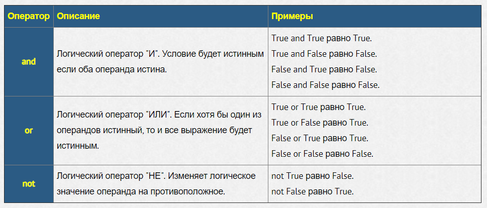
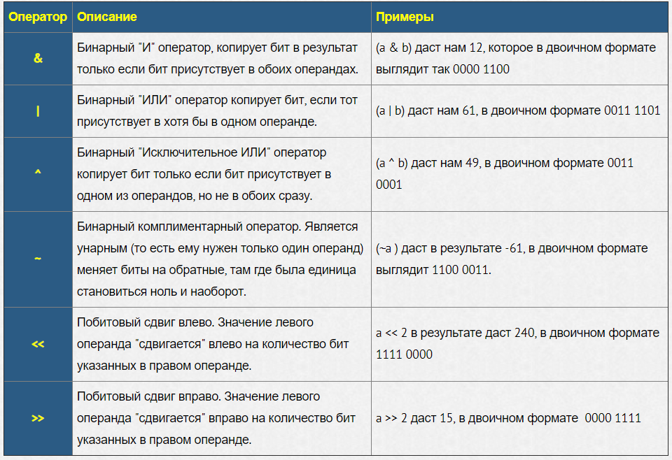

Логические операторы
Побитовые операторы
Побитовые операторы предназначены для работы с данными в битовом (двоичном) формате. Предположим, что у нас есть два числа a = 60; и b = 13. В двоичном формате они будут иметь следующий вид:
a = 0011 1100
b = 0000 1101
Переменные типа int хранятся в двоичной системе счисления в виде последовательности бит. Биты нумеруются от 0, биты будем записывать справа налево (то есть бит с номером 0 будет записан самым правым, а самый старший бит — самым левым).
a = 0 # 0b0
a = 1 # 0b1
a = 2 # 0b10
a = 10 # 0b1010
a = 255 # 0b11111111
Задание:
Умножить значения двух чисел. В первом числе взять биты, которые размещенные в позициях 0-5. Во втором числе взять биты, которые размещены в позициях 0-7.